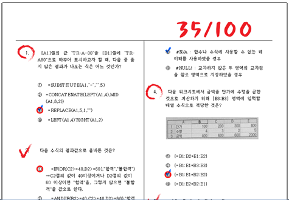

[사진은 글의 내용과 별로 상관없다]
4지 선다형 문제 - 4가지 보기 중에 하나를 고르도록 하는 문제 - 로 100점 만점의 시험을 치렀다고 가정하자.
문제의 답을 아는 경우에는 답을 맞추고. 모를 경우에는 찍는다고 가정하자. (내가 아는 사람들은 대부분 이렇다)
당연한 얘기겠지만 모든 문제의 답을 아는 경우에는 100점을 맞을 것이고.
모든 문제의 답을 모르는 경우에는 25점을 '기대'할 수 있을 것이다.
그렇다면 70점을 맞은 학생은 얼만큼의 문제를 '알아서' 맞추고. 또 얼만큼의 문제는 '찍어서' 맞춘것일까?
이것은 간단한 2원 1차 연립방정식에 해당한다.
a - 아는 문제의 점수
b - 모르는 문제의 점수
a + b = 100 ... 아는 문제와 모르는 문제의 점수 합은 100점이다.
a + (b / 4) = 70 ... 아는 문제는 다 맞추고. 모르는 문제는 1/4 를 맞춰서 더한 점수가 70점이다.
닶: a = 60, b = 40
즉, 60점은 알아서 맞춘것이고 나머지 10점은 모르지만 찍어서 맞춘것이다.
이렇게 본다면 70점을 맞은 학생은 사실 전체 문제의 60% 만 실력으로 맞췄다는 뜻이 된다.
평균적으로 그렇다는 거다. 운이 좋으면 아무것도 모른채로 100점을 맞는게 가능하긴 하다. (하지만, 그 확률은 흔히 보던 25문항의 경우라도 로또 당첨확률의 13만5천분의 1이다.)
결국 70점을 맞춘 학생은 60%를 알고 있었던 것이고, 같은 방법으로 계산하면 40점을 맞춘 학생은 그 절반인 20%만 알고 있던게 된다.
결론
이런 우습지도 않은 글에 결론이 있다.
1. 50점을 맞은 학생이 전체 내용의 절반을 알고 있는건 아니라는 것.
- 숫자를 그대로 지식과 비교할 수 없다. (약 33%만 알고 있으면 50점을 맞을 수 있다.)
2. 공부한만큼 성적이 오르지 않는다는것.
- 20%를 알던 학생이 40%를 알게 되더라도(100% 지식 향상) 성적은 40점에서 55점으로 37.5% 오를뿐이다.
재미없으면 패스.